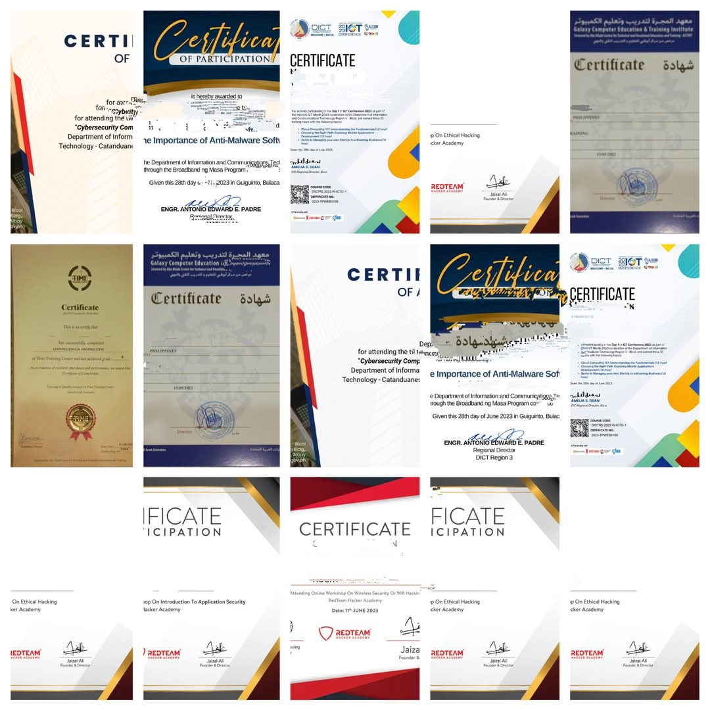
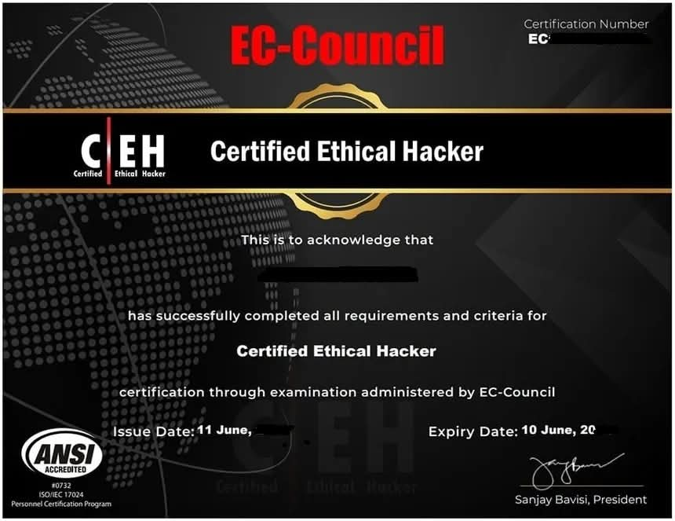

R.O.C.K.Y
"Empowered by Knowledge, Driven by Challenges – Bridging Technology and Innovation for a Better Tomorrow."
About Me
I am a passionate developer focused on creating intuitive user experiences. With a diverse skill set that spans freelancing, virtual assistance, IT technical support, software development, and cybersecurity, I thrive in dynamic environments where I can leverage my technical acumen to solve problems and streamline processes.
As a freelance virtual assistant, I am adept at managing tasks efficiently and supporting clients in achieving their goals. My background in IT technical support has equipped me with the ability to troubleshoot and resolve complex technical issues, ensuring seamless operations for users.
In the realm of software development, I am dedicated to building robust applications that not only meet functional requirements but also enhance user satisfaction. My commitment to cybersecurity ensures that I prioritize data protection and secure coding practices, safeguarding users' information in a digital age.
I am continuously learning and evolving in these fields, driven by a passion for technology and a desire to deliver exceptional results. Let's connect to explore how I can contribute to your projects!
My Achievements and My Projects
My Certifications
 Project Software Screenshot

... more projects ...
Contact
You can reach me at rlic89183@gmail.com.